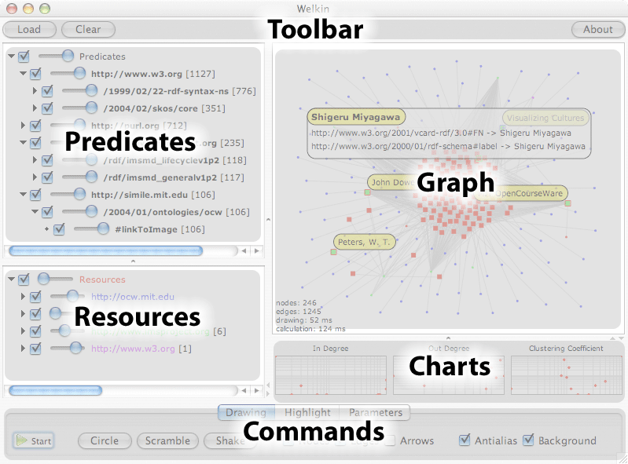
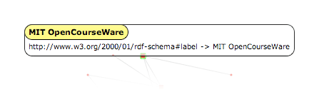
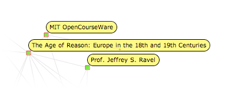
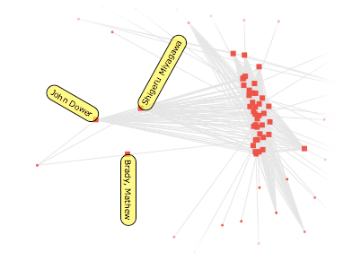

Welkin is an archaic english term to define the celestial sphere, the apparent surface of the imaginary sphere on which celestial bodies appear to be projected (kudos to Jessica Klein for suggesting it to us).
The reference to the sky and celestial bodies is very meaningful in this context: Welkin is not meant to be a tool to discover a single RDF statement out of a thousands, but it's meant as a "telescope" for your RDF data, a tool that lets you understand its global shape and cluster characteristics rather than the individual item.
So, if you are thinking about using Welkin as a flashy and sexy frontend tool for your dataset, think again: end users don't care about obtaining a mental picture of an entire dataset, but care more about the extreme locality. They don't care about your galaxy, they want to find the planet that has enough air for them to survive! If that's what you are looking for, the Longwell facetted and textual browser is probably what you want.
Welkin is not designed as a tool for end users, it's thought for an audience of data and metadata analysts (not necessarily RDF-savvy!) that need to:
Let's look at a screenshot of the Welkin User Interface, this time outlining the various panes:

This screenshot was taken on MacOSX. Since java has pluggable look&feel, the look of Welkin on your platform might be different, but don't worry, the panes and buttons will be in the same position and the would have the same exact functionality (or, if not, it's a bug and please, report it to us).
The toolbar contains three buttons:
When a model is loaded, you can keep adding new statements to the loaded model by loading other ones. This is very useful to merge different models and see if/how they connect.
The graph pane is the main Welkin pane and where the model visualization takes place. The Welkin Graph canvas is highly interactive. We believe that fast and immediate interactivity is the key for a better understanding of a very complex model, rather than panning and zooming on statically drawn graphs.
When the RDF memory model is empty, the graph pane doesn't show anything. By using the Load button in the toolbar above, you can load statements from files on your disk (we plan to introduce the ability to connect to Sparql web services once the protocol gets finalized).
Once RDF statements are loaded in memory, Welkin represents them as dots and lines, placing them at, initially, at random locations.
To reduce clutter, Welkin does not display literals as nodes, but rather presents them in a box as soon as you click the note that you are interested in. Literals can never be subjects of RDF statements, therefore they always represent Leaves of the graph, which we believe do not add any useful topological information to the visualization and just add clutter. This also means that if your RDF model does not contains statements with predicates that link two resources, you will see disconnected nodes, even if there are literals hanging off of them.
Dots can have two different shapes, depending on whether or not they are used as subjects in any of the statements currently loaded in memory: a small dot represents a resource that is used only as an object, a bigger dot represents a resource that is used at least once as a subject.
In case there are two different predicates between the same resources, Welkin displays only one line. We plan to research ways to visualize multiple predicates in a way that is efficient in both performance and visualization effectiveness. Also note how the predicates are not shown on the graph display. We also plan to work on efficient ways to allow mouseover-like effects to visualize the predicate values in the future.
RDF models are directed graphs, but for performance reason Welkin defaults with the direction arrows of the predicates turned off. To turn it on, check the Arrows check-box in the Drawing tab of the Commands bar at the bottom of the Welkin screen. (see more about the drawing commands and options below)
The graph panel reacts to mouse clicks. There are three events that it currently recognizes, each with a different effect:


